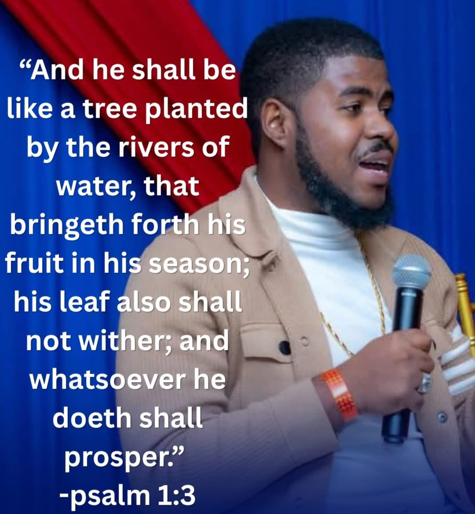

Contact Trey Walters
Thank you for visiting.
If you have questions about the book, mentorship opportunities, or would like to invite Trey to speak at your event, please reach out below.

Speaking & Event Requests
Trey Walters is available for:
Conferences and leadership events
Churches and community gatherings
Podcasts and interviews
Relationship recovery and restoration events
To request Trey for speaking or media appearances, please email:
Mentorship & Coaching Inquiries
If you are interested in mentoring or coaching through The Restoration Movement, please include:
Your name
What kind of support you’re looking for
The best way to follow up
Email: masterofmysuccess1@gmail.com
Response Time
Please allow 24–48 hours for a reply. Thank you for your support.